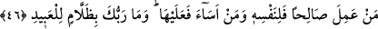

ümmetlerde cârî olan bir âdettir. Yalnız senin kavmine mahsus bir durum değildir.
Burada Peygamberimiz (s.a.) tesellî edilmektedir.
Eğer ümmetinde tekzibçiler hakkında azâbı erteleme hükmü, müminlerle kâfirler
arasında devam eden dâvânın duruşması kıyâmete bırakılmasaydı, hüküm verilir, işleri
bitirilirdi. Fakat AllahTeâlâ onlar hakkında hükmü şu âyetlerle kıyâmete bırakmıştır:
“Bilakis kıyâmet onlara vaad edilen asıl saattir ve o saat daha belâlı ve daha
acıdır.” (el-Kamer, 54/46). “Fakat Allah, onları belirtilmiş bir süreye kadar
erteliyor. Vakitleri gelince (gerekeni yapar). Kuşkusuz Allah, kullarını
görmektedir.” (Fâtır, 35/45).
Fakîr (Bursevî) der ki: Bu ümmetten tekzîb eden topluluk tamamen helâk
edilmemiştir. Çünkü bizim Peygamberimiz Hz. Muhammed (s.a.s.) rahmet
Peygamberidir. Bir de Mekke bütün nebî ve rasûllerin uğrak yeridir.
Yine mukarreb meleklerin, âlemlerin Rabbi olan Allah’ın her çeşit rahmetiyle indiği
yerlerdir. Şâyet tekzîb ve inkâr eden kavimler tamamen helâk edilecek olsa, bu sefer
Hicaz ve Mekke, Âd ve Semûd kavminin ülkeleri gibi harap olur ve insanlar bu
durumdan nefret eder, onlardan uzaklaşırlardı. Halbuki İbrâhîm Aleyhisselâm’ın “Ey
Rabbimiz! Namazı dosdoğru kılmaları için ben, neslimden bir kısmını senin Beyt-i
Harem’inin/Kâbe’nin yanında, ziraat yapılmayan bir vâdîye yerleştirdim. Artık sen
de insanlardan bir kısmının gönüllerini onlara meyledici kıl ve meyvelerden
bunlara rızık ver! Umulur ki nimetlere şükrederler.” (İbrâhîm, 14/37) şeklinde duâsı
vardır.
Hâl böyle olunca emîn ve mübârek belde olan Mekke’nin musîbetler diyârı olmaması
ve Allah’ın gazabının kötü sonuçlarından korunmuş olması Hudâ’nın derin
hikmetlerindendir.
“Onlar” senin kavminin kâfirleri “onda” Kur’ân hakkında “işkilli bir kuşku
içindedirler.” Izdırapla inleyen bir keman gibi. Bu, “işkilli bir kuşku içinde olma”
ifâdesinin izâhı, Sebe’ sûresi son âyette geçmiştir. Oraya bakılabilir.
Bir şeyden kuşku duymak iki tarafı eşit sayıp tercihsiz her ikisinde de tereddüd
etmektir. Vehim ise işin hep zayıf ve sakat yönünü düşünmektir. Gerek kuşku, gerekse
vehim sadece bir tasavvurdan ibâret olup hüküm ve tasdîk ifâde etmemektedir.
46. Kim iyi bir iş yaparsa, bu kendi lehinedir. Kim de kötülük yaparsa aleyhinedir.
Rabbin kullara zulmedici değildir.
“Kim” bütün kitaplara inanıp gereği ile “iyi iş yaparsa” bu amelinin “yararı
kendisinedir”, başkasına değildir. “Kim kötülük yaparsa” kötü amel işlerse, “zararı
kendisinedir.” başkasına değildir. “Rabbin kullara zulmedici değildir.”